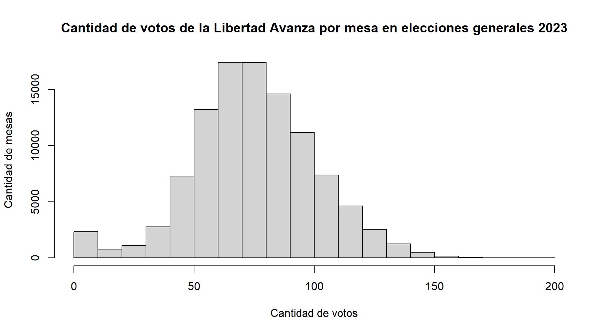
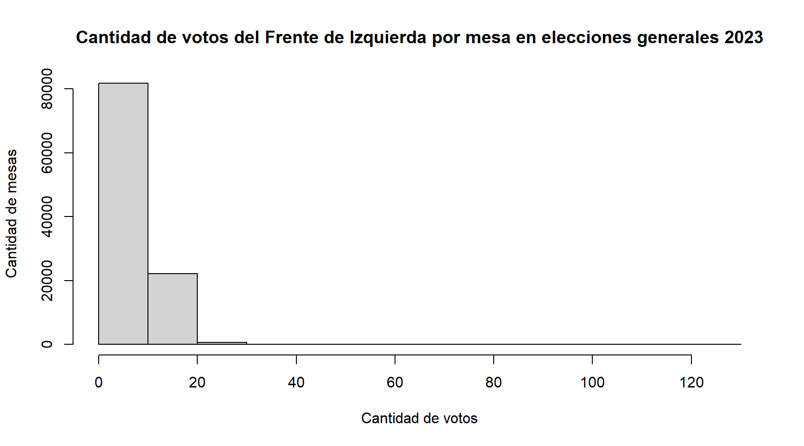
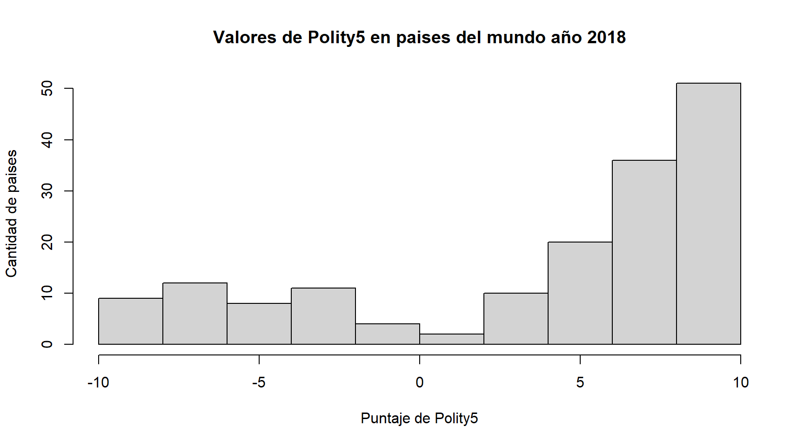
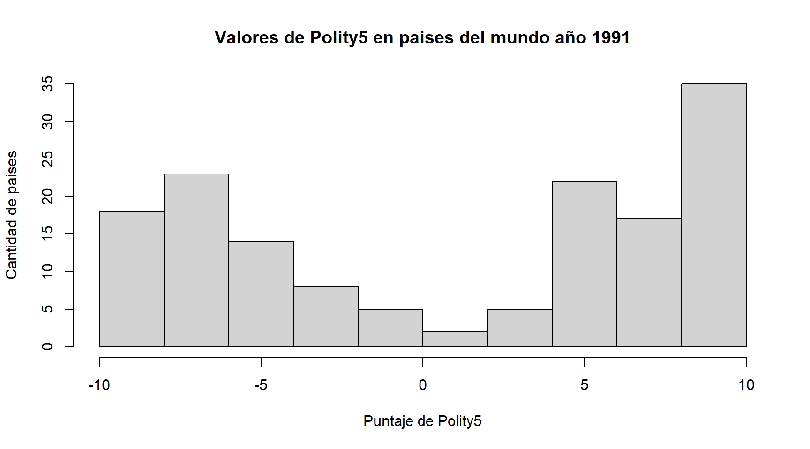
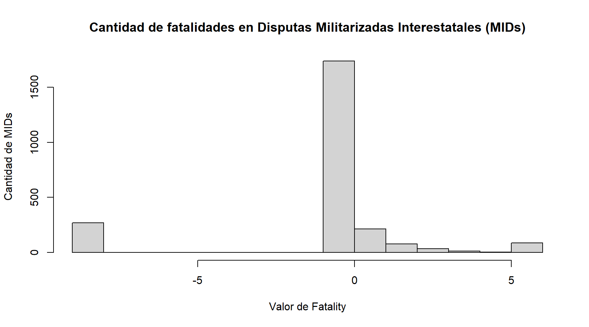
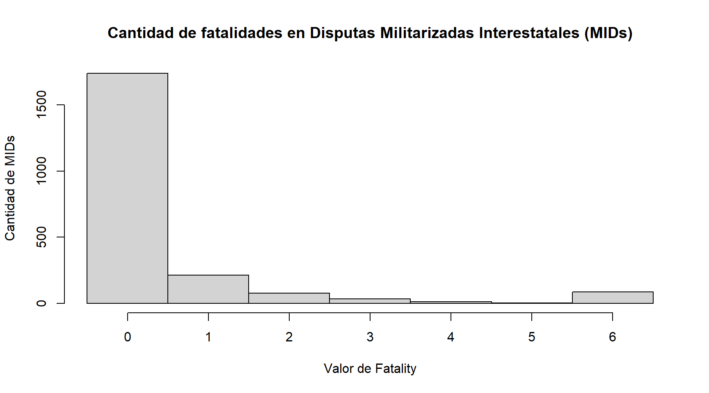

Explorando los datos, Estadística descriptiva de una variable: histogramas y tablas de frecuencia
Introducción
En el camino de la investigación cuantitativa, una vez que hemos formulado preguntas, diseñado un plan y transformado conceptos en variables, llegamos al momento de mirar de frente a los datos. Este módulo marca la entrada en el terreno de la estadística descriptiva, es decir, el conjunto de técnicas que nos permiten conocer cómo están compuestos los datos antes de avanzar hacia inferencias más complejas o pruebas de hipótesis.
Es importante subrayar que los datos que describimos pueden provenir de distintas fuentes. En algunos casos, somos nosotros mismos quienes los hemos producido mediante encuestas, entrevistas estructuradas o registros de observación en el campo. En otros, recurrimos a fuentes secundarias, como bases de datos internacionales, encuestas nacionales ya publicadas o estadísticas oficiales que han sido recopiladas por organismos e institutos especializados. En ambos escenarios, el trabajo descriptivo cumple la misma función: darnos un panorama claro de la información con la que contamos y ayudarnos a identificar patrones, errores, vacíos y sorpresas.
Antes de calcular indicadores de resumen o de lanzarnos a modelos estadísticos, debemos responder tres preguntas muy básicas pero fundamentales:
- ¿Qué valores toma la variable?
- ¿Con qué frecuencia se presentan esos valores?
- ¿Cómo se distribuyen dentro del conjunto de datos?
Responder a estas preguntas es como tomarle el pulso a nuestros datos: no nos dice todavía “por qué” ocurren las cosas, pero sí nos muestra “qué está pasando” en la información que tenemos delante.
Para ello contamos con dos herramientas clásicas, sencillas y enormemente poderosas:
- Los histogramas, que ofrecen una representación gráfica intuitiva de la distribución de una variable y permiten identificar rápidamente tendencias, concentraciones, valores extremos o vacíos.
- Las tablas de frecuencia, que resumen la información en formato tabular y nos muestran con precisión cuántas veces aparece cada valor, qué porcentaje del total representa y cómo se organiza la variabilidad del conjunto.
El objetivo de este módulo no es solo que aprendas a leer estos resúmenes, sino también a producirlos, a interpretarlos críticamente y a reconocerlos como el primer peldaño de un análisis más profundo. Como veremos, esta primera exploración descriptiva es el punto de partida para detectar problemas de calidad (valores perdidos, missing values; o casos atípicos, outliers) y para orientar las decisiones analíticas posteriores.
¿Con qué datos contamos?
Antes de comenzar con cualquier análisis descriptivo, debemos tener claro qué datos tenemos delante y en qué formato se encuentran. En la investigación cuantitativa trabajamos, casi siempre, con lo que se conoce como una matriz de datos. Se trata de una tabla rectangular donde cada fila representa un caso (es decir, una unidad de análisis) y cada columna corresponde a una variable. En la intersección entre fila y columna encontramos la celda, que contiene un valor específico: el dato individual de esa variable para ese caso en particular.
Por ejemplo, si nuestra unidad de análisis son las personas encuestadas, cada fila será un individuo: “Juan Pérez”, “María Gómez”, “Carlos Rodríguez”. Las columnas podrán ser variables como “edad”, “nivel educativo”, “ingreso mensual”. En las celdas, entonces, veremos que Juan tiene 35 años, educación secundaria completa y un ingreso de 800 dólares; mientras que María tiene 52 años, nivel universitario y un ingreso de 1.200 dólares. Este formato rectangular es la base de la gran mayoría de los análisis estadísticos.
| Nombre | Edad | Nivel educativo | Ingreso mensual (USD) |
|---|---|---|---|
| Juan Pérez | 35 | Secundaria completa | 800 |
| María Gómez | 52 | Universitario | 1.200 |
| Carlos Rodríguez | 41 | Secundaria incompleta | 950 |
El formato rectangular y la filosofía de los datos
Idealmente, nuestras bases de datos deben mantener un formato rectangular limpio, es decir, que haya tantas celdas llenas como la multiplicación del número de filas por el número de columnas. Cada caso debe estar representado en una sola fila, y cada variable en una sola columna. Esta es la lógica detrás de lo que Hadley Wickham (2014) llamó el principio de datos “tidy”: un dataset claro y ordenado es aquel en el que:
- Cada variable tiene su propia columna.
- Cada observación (o caso) tiene su propia fila.
- Cada valor ocupa su propia celda.
Este principio puede parecer obvio, pero en la práctica muchos datasets se presentan en formatos más complejos o “desordenados”. Los datos con los que trabajaremos nosotros ya estaran limpios por fines didacticos, pero es fundamental saber que en el mundo real gran parte del analista de datos consiste en “limpiar” datos de distintas formas. Arreglar codificaciones confusas, cambiar estilos numericos, separar celdas combinadas, entre otros.
Códigos y documentación
En el modulo anterior discutimos el rol de los códigos en los datasets. Conviene recordarlo aquí: lo que vemos en las celdas no siempre son las categorías textuales (“hombre”, “mujer”, “otros”), sino códigos que representan esas categorías (“1”, “2”, “3”). Este sistema simplifica la recolección y la manipulación de los datos, pero obliga al investigador a estar siempre atento a la documentación y al libro de códigos que acompaña la base.
Un número en la celda nunca habla por sí solo, puede significar un dato real, pero también una categoría residual (“otros”), una no respuesta (“99”) o un valor perdido (“-1”). La tarea del investigador es saber exactamente qué significa cada código y cómo debe ser tratado en el análisis.
Una nota sobre bases de datos más complejas
Aunque aquí nos concentremos en las matrices rectangulares, conviene anticipar que en el mundo real existen estructuras de datos más complejas: bases relacionales con múltiples tablas, encuestas multinivel (personas anidadas en hogares, hogares en municipios, municipios en provincias), o registros administrativos que acumulan observaciones en formatos no convencionales. Sin embargo, para los fines de este curso y de la estadística descriptiva, el punto de partida seguirá siendo la lógica de la matriz rectangular: un listado claro de casos y variables con el que trabajaremos a lo largo de nuestros análisis.
¿Qué hacemos con los datos?
Una vez que contamos con nuestros datos comienza la etapa de análisis e interpretación. Lo que sigue a partir de ese momento no es un mero trámite técnico, sino un trabajo que requiere rigor, paciencia y, cada vez más, destrezas informáticas. En la actualidad sería impensable abordar este proceso sin apoyarnos en planillas electrónicas, paquetes estadísticos o scripts especializados que nos permiten organizar, limpiar y explorar datos de manera sistemática. Contemplando la diversidad de destresas requeridas es que desarrollamos el formato modular de los trayector profesionales. No obstante, hay una serie de capacidades analiticas que todos deberian tener en su caja de herramientas profesional.
En este módulo nos concentraremos en la descripción de conjuntos de datos. Se trata de una primera aproximación, cuyo objetivo principal es familiarizarnos con la información disponible: ver cómo está organizada, qué valores aparecen, con qué frecuencia lo hacen y si existen patrones reconocibles a simple vista. Antes de intentar responder preguntas más ambiciosas o realizar análisis complejos, necesitamos este paso preliminar de exploración.
Lo que aprenderemos aquí constituye una especie de “radiografía inicial” de nuestros datos. No estamos todavía en el terreno de las conclusiones definitivas, sino en el de la observación cuidadosa y sistemática. Así, comenzaremos por construir tablas y graficos, que nos muestran de manera precisa cuántas veces aparece cada categoría o rango de valores. En módulos posteriores daremos un paso más, sintetizando toda esa información en pocas cifras representativas, pero aquí nos limitaremos a observar y describir.
Histogramas: la visualización universal
El histograma es, un gráfico sencillo que nos permite visualizar cómo se distribuyen los valores de una variable cuantitativa. Lo que hace es dividir el rango de valores posibles en intervalos contiguos (a veces llamados clases o bins) y mostrar con la altura de cada barra la frecuencia con que los casos caen en ese intervalo. En el histograma, las barras están unidas, porque representan intervalos consecutivos de una misma escala continua. Además, el ancho de cada barra tiene un significado: nos indica el rango de valores que cubre.
Podemos imaginarlo como si dividiéramos una estantería en cajones de igual tamaño y luego colocáramos dentro de cada cajón todos los casos que caen en ese rango. Si la barra de un cajón es muy alta, quiere decir que ese rango concentra muchos casos. Si es baja, significa que en ese intervalo hay pocos. Y si alguna barra aparece aislada, lejos del resto, es una señal de que puede haber un valor atípico que merece atención.
Conociendo nuestros datos
Para empezar a aplicar herramientas de estadística descriptiva necesitamos trabajar con un conjunto de datos real, que nos permita ver de manera concreta cómo las variables se organizan y cómo se expresan en tablas y gráficos.
Primera vuelta de la eleccion presidencial de 2023 en Argentina.
En este módulo vamos a introducir un ejemplo especialmente relevante: los resultados oficiales de las elecciones generales de 2023 en Argentina, disponibles públicamente en el portal del Ministerio del Interior (https://resultados.mininterior.gob.ar/resultados/2023/2/1/0).
Estos datos tienen varias ventajas para nuestro aprendizaje. En primer lugar, son una fuente oficial y confiable, lo que nos asegura que fueron recopilados con procedimientos sistemáticos y transparentes. En segundo lugar, son datos de gran escala: abarcan la totalidad del territorio nacional, con miles de unidades registradas. Y en tercer lugar, son datos estructurados en formato de matriz, es decir, perfectamente adaptables al tipo de análisis cuantitativo que nos interesa practicar.
La organización del sistema electoral
Para comprender los datos conviene recordar cómo funciona el proceso electoral argentino. Los votos se registran en lo que se denomina una mesa electoral, que es la unidad mínima de organización: un conjunto de votantes asignados a un lugar específico (generalmente una escuela o establecimiento público). Cada mesa recibe un padrón de entre 200 y 350 electores habilitados, y en ella se cuentan los votos de manera independiente. Esto significa que, en la base de datos, cada fila representa una mesa electoral como unidad de análisis, con todas las variables asociadas: cantidad de electores, votos emitidos, votos en blanco, votos nulos, y votos a cada agrupación política.
Este detalle es fundamental porque determina qué estamos observando. Si decimos que una mesa tuvo 80 votos para una fuerza política, estamos hablando de una fracción muy pequeña del total nacional, pero es justamente esa unidad mínima la que nos permite explorar cómo se distribuye el apoyo electoral en el territorio. A partir de allí podemos agregar los datos por distrito, provincia o región, pero la lógica de base es siempre la misma: cada mesa es un caso en nuestra matriz de datos.
La variable que analizamos
En este ejemplo nos concentramos en una variable muy puntual: la cantidad de votos obtenidos por La Libertad Avanza en cada mesa electoral. Se trata de un número entero, que puede ir desde 0 (si en esa mesa el partido no recibió ningún voto) hasta más de 200 en mesas donde concentró la mayoría de los sufragios. Es una variable cuantitativa discreta, porque representa conteos de votos.
Al elegir esta variable, estamos en condiciones de preguntarnos: ¿cómo se distribuye el número de votos de La Libertad Avanza en las distintas mesas del país? ¿Qué valores son más frecuentes? ¿Hay mesas donde obtuvo apoyos extremadamente bajos o extremadamente altos?
De la fuente al análisis
Aquí aparece una reflexión metodológica clave: aunque la fuente original nos brinde datos masivos y detallados, lo primero que debemos hacer es revisar qué significa cada unidad de análisis y qué representa cada variable. Solo así evitamos malinterpretaciones. En este caso, la unidad de análisis no son los individuos (los votantes), ni tampoco los distritos o provincias: son las mesas. Cada observación del dataset corresponde a una mesa, y por lo tanto los resultados reflejan la distribución de votos a ese nivel de agregación.
Además, como trabajamos con datos que no hemos producido nosotros directamente, sino que provienen de una fuente secundaria oficial, debemos tener presente lo que vimos en el módulo anterior: estos datos vienen codificados y documentados. En la matriz que usamos, cada celda tiene un valor que remite a una categoría definida, y es responsabilidad del investigador leer el manual de códigos y la documentación para interpretar correctamente lo que aparece en pantalla.
Un primer vistazo con histogramas
Con esta base en mente, podemos explorar la distribución de la variable seleccionada —los votos de La Libertad Avanza por mesa— a través de un histograma. Este gráfico nos permitirá observar rápidamente cómo se organizan los resultados, cuáles son los valores más frecuentes y qué tan dispersos se encuentran los apoyos entre las distintas mesas.
Una nota preliminar, los graficos aqui generados son deliveradamente los que por defecto genera cada programa para enfatizar el analisis. Estilisticamente hay muchas cosas a mejorar como veremos mas acabadamente en el modulo de graficos y sus respectivas ejercitaciones practicas, pero este primer histograma es una aproximacion a los datos apra se visualizada por el investigador y no necesariamente incluida en un informe o articulo a divulgar.
Eje X (horizontal): los valores posibles de la variable analizada, en este caso, la cantidad de votos que obtuvo La Libertad Avanza en cada mesa. Cada barra cubre un intervalo de votos (por ejemplo, de 40 a 50 votos, de 50 a 60 votos, etc.).
Eje Y (vertical): la frecuencia, es decir, cuántas mesas cayeron dentro de ese intervalo. Una barra alta indica que muchas mesas registraron un número de votos en ese rango; una barra baja, que pocas mesas tuvieron esa cantidad.
Cada barra: representa un rango definido de resultados de mesa. La altura de la barra está directamente relacionada con el número de mesas que tuvieron esa cantidad de votos para el partido en cuestión.
Interpretando la distribución
Lo que observamos es una distribución con forma de campana, donde la mayoría de las mesas se concentran alrededor de un rango intermedio (aproximadamente entre 60 y 80 votos), mientras que hay pocas mesas con números muy bajos o muy altos. Al mismo tiempo se puede ver un salto importante en la barra de menores votos, entre 0 y 10.
Esto tiene sentido si pensamos en la estructura electoral: la cantidad de votos por mesa depende tanto del tamaño del padrón asignado a cada mesa como de la proporción de votantes que apoyaron a ese partido en esa zona. Por eso, la mayor parte de los casos se acumula en un rango medio, y solo unas pocas mesas quedan en los extremos (muy bajas porque el partido obtuvo escaso apoyo en ese distrito, muy altas porque concentró un fuerte apoyo en esa mesa particular).
Un contraste: los votos del Frente de Izquierda
El histograma de arriba muestra la distribución de votos del Frente de Izquierda en cada mesa electoral del país durante las elecciones generales de 2023. Al igual que en el caso anterior con La Libertad Avanza, la unidad de análisis sigue siendo la mesa electoral, y lo que registramos en el eje X son las cantidades de votos obtenidos por esa fuerza en cada una. El eje Y, por su parte, indica la cantidad de mesas que registraron esos valores.
Lo primero que salta a la vista es que la mayor parte de las barras se concentran en el extremo izquierdo del gráfico: la mayoría de las mesas le asignó al Frente de Izquierda entre 0 y 10 votos. Hay un descenso muy marcado a medida que nos movemos hacia la derecha: pocas mesas registran entre 10 y 20 votos, y casi ninguna supera los 30.
Esto nos muestra una distribución altamente asimétrica, con gran concentración de frecuencias en los valores bajos. Dicho en términos más simples, el Frente de Izquierda recibió apoyos reducidos en la mayoría de las mesas, con muy pocos casos excepcionales donde alcanzó números relativamente altos.
La comparación con el histograma de La Libertad Avanza nos permite destacar un punto metodológico central: la forma del histograma refleja la distribución del apoyo electoral, no el total de votos a nivel nacional. Mientras que una fuerza de alcance nacional y con alta performance puede mostrar una distribución centrada en valores intermedios (con miles de mesas aportando entre 60 y 80 votos), una fuerza más pequeña tenderá a mostrar distribuciones muy sesgadas hacia los valores bajos.

La base Polity V: un estándar en el estudio de los regímenes políticos
En Política Comparada, una de las preguntas más persistentes es cómo medir y comparar el régimen político de los países. ¿Qué tan democrático es un país? ¿Podemos ubicar a los Estados en un continuo entre autocracia y democracia? Para responder a estas preguntas, se han desarrollado varias bases de datos internacionales, pero una de las más influyentes es la serie Polity, cuyo último desarrollo es Polity V (2018).
¿Qué mide Polity?
La base Polity ofrece un puntaje que ubica a cada país en una escala que va de -10 (autocracias plenas) a +10 (democracias plenas). Para asignar esta puntuación, se tienen en cuenta distintos componentes de las instituciones políticas:
- La apertura de la competencia política (qué tan competitivas son las elecciones).
- Las restricciones al poder ejecutivo (si existen límites y controles efectivos al gobernante).
- La calidad de la participación política (si es inclusiva o está restringida a ciertos grupos).
A partir de estos criterios, se genera un índice agregado que resume, en un solo número, la ubicación de cada país en ese continuo autocracia–democracia.
El puntaje Polity se ha convertido en una referencia habitual para:
- Estudios comparados de democratización.
- Análisis estadísticos sobre la relación entre democracia y guerra, desarrollo económico o estabilidad política.
- Construcción de tipologías globales de regímenes.
Interpretando el histograma de Polity5 en 2018
El gráfico que observamos muestra la distribución de puntajes Polity5 para todos los países del mundo en el año 2018.
- Eje X (horizontal): representa el puntaje de Polity, desde -10 (autocracias plenas) hasta +10 (democracias plenas).
- Eje Y (vertical): indica la cantidad de países que se ubican en cada intervalo de la escala.
- Cada barra: agrupa a los países que comparten un rango de puntajes. > cual es nuestra unidad de analisis aqui ?

Concentración en el extremo positivo: Se observa una marcada concentración en el valor +10, que corresponde a las democracias plenas. Más de 50 países en 2018 alcanzaron ese puntaje máximo, lo cual refleja la consolidación democrática en buena parte del mundo. En el extremo opuesto, también hay varios países ubicados en los valores más bajos (-10, -9, -8), correspondientes a regímenes autoritarios pero en menor cantidad.
Un “valle” en el centro: Entre los valores intermedios (de -5 a +5) la cantidad de países es menor. Esto sugiere que las democracias parciales o regímenes híbridos existen, pero son menos numerosos que los casos más “puros” en cada extremo. La distribución, por lo tanto, no es homogénea, sino bimodal: predominan las democracias plenas y las autocracias consolidadas, mientras que los regímenes mixtos o en transición son menos frecuentes.
El caso del cero: Apenas unos pocos países aparecen en torno al puntaje 0, lo que indica situaciones de ambigüedad institucional, transiciones inestables o estados fallidos.
Polity5 en 1991: un mundo en transición
Para entender el valor de los datos de Polity, conviene situarnos históricamente. El año 1991 marcó un punto de inflexión en la política internacional. Fue el momento de la disolución de la Unión Soviética, la culminación de la Guerra Fría y el inicio de un proceso que algunos analistas llamaron la “tercera ola de democratización”. En ese contexto, el mapa global de regímenes políticos estaba en plena transformación.
La base Polity5 nos permite observar esa transición con claridad. El histograma que presentamos a continuación muestra cómo se distribuían los países del mundo en la escala de Polity en 1991.

La persistencia de las autocracias. Una proporción importante de países se encontraba en los valores más bajos de la escala (entre -10 y -6). Esto refleja la existencia de regímenes autoritarios consolidados, en muchos casos vinculados a partidos únicos, dictaduras militares o monarquías absolutas. África y Asia concentraban gran parte de estos casos, pero también persistían regímenes comunistas y autoritarios en otras regiones.
Democracias plenas, pero aún minoritarias. En el extremo opuesto vemos un grupo de países con puntaje +10. Se trata de las democracias consolidadas, principalmente Europa Occidental, Norteamérica, Oceanía y algunos países de América Latina que habían logrado redemocratizarse en los años ochenta. Sin embargo, este grupo era todavía más reducido que en la actualidad: las democracias eran numerosas, pero no dominaban el mapa.
El “vacío” del centro. Entre los valores intermedios, aproximadamente entre -2 y +2, la cantidad de países era mucho menor. Esto sugiere que, a comienzos de los noventa, la política mundial tendía a polarizarse entre regímenes autoritarios y democracias plenas, con menos espacio para los híbridos o los sistemas en transición. Los llamados regímenes “semidemocráticos” existían, pero eran menos frecuentes.
Si ponemos este histograma junto al que analizamos para 2018, la diferencia en la forma de la distribución cambia radicalmente: de un mundo polarizado en 1991 pasamos a un mundo donde predominan las democracias en 2018. En términos gráficos, es como si la masa de países se hubiera desplazado hacia la derecha del histograma.
La base de datos de Disputas Militarizadas (MIDs)
Dentro del campo de estudios sobre guerra y paz en Relaciones Internacionales, una de las fuentes empíricas más utilizadas es la base de datos de las Disputas Militarizadas Interestatales (MIDs, por su sigla en inglés), compilada por el proyecto Correlates of War (COW). Su última versión, MIDs 5, cubre el período 1816–2014 e identifica cada instancia en que un Estado recurrió, amenazó con recurrir o desplegó fuerzas militares contra otro Estado.
Aquí lo que se busca es mapear cada episodio de conflicto, desde las amenazas y demostraciones de fuerza hasta las guerras abiertas. Cada fila de la base representa un MID (es decir, una disputa militarizada), y para cada disputa se registran múltiples variables: fecha, participantes, tipo de acción, resultado, nivel de hostilidad y, entre ellas, un dato clave: la letalidad del conflicto.
Midiendo la letalidad de un MID
A primera vista, en el dataset encontramos una variable llamada fatality. Podría pensarse que se trata del número real de muertes producidas en la disputa, pero aquí aparece una cuestión fundamental: no son conteos absolutos, sino categorías codificadas.
Según el libro de códigos de MIDs 5, el valor de fatality significa lo siguiente:
- 0 → Ninguna muerte.
- 1 → Entre 1 y 25 muertes.
- 2 → Entre 26 y 100 muertes.
- 3 → Entre 101 y 250 muertes.
- 4 → Entre 251 y 500 muertes.
- 5 → Entre 501 y 999 muertes.
- 6 → Más de 999 muertes.
- -9 → Dato faltante (missing).
Esto implica que, aunque los valores aparezcan en formato numérico, no son cantidades directas de muertes, sino categorías ordinales que agrupan a las disputas en intervalos de letalidad. Un valor “2” no significa “dos muertes”, sino que la disputa se ubica en la categoría de entre 26 y 100 muertes.
El riesgo de confundir códigos con datos
En el siguiente histograma vemos cómo se distribuyen las disputas según su nivel de fatalidad.

Si miramos el histograma de la variable de letalidad, lo primero que salta a la vista es que hay una gran cantidad de disputas con valores negativos, en particular en -9, lo que podría interpretarse como que hubo “menos nueve” muertes en esos casos. Además, se nota que la mayoría de los conflictos se concentran en el valor 0, es decir, literalmente cero muertes, mientras que prácticamente no hay casos en los valores intermedios. También se observa que la escala solo llega hasta 6, lo que parece indicar que ninguna disputa pasó de seis muertes en total. En conjunto, podríamos concluir entonces que los conflictos militarizados rara vez generan víctimas, que los valores negativos muestran una intensidad aún menor y que, en el peor de los casos, no se superan las seis fatalidades. Este ejemplo ilustra de manera muy clara la advertencia que venimos haciendo a lo largo del curso: los números en un dataset no siempre son datos directos de la realidad, sino códigos que requieren interpretación.
Si un investigador tratara los valores de fatality, sin leer la documentacion o hacer una exploracion preliminar como esta, cometería un error grave. Por ejemplo, podría calcular el promedio de la variable y concluir que “la disputa militarizada promedio tuvo 1,5 muertes”. Esa interpretación sería absurda, porque lo que el número refleja no son muertes individuales, sino categorías. El “1” no significa “una muerte”, sino “entre 1 y 25”.
El valor correcto de la variable está en el intervalo que representa, no en el número que aparece en la celda. Por eso, el primer paso al trabajar con este tipo de bases es leer con cuidado el libro de códigos y comprender qué significa cada valor.
El histograma de la letalidad
Ahora si procedamos a un histograma preprocesado, donde quitamos los valores -9 o perdidos.

Aqui vemos lo siguiente,
- Eje X: valores de
fatality, que en realidad son categorías codificadas.
- Eje Y: número de disputas que se ubican en cada categoría.
Lo que observamos es que la gran mayoría de las disputas se concentra en el valor 0, es decir, en incidentes donde no hubo muertes. Recordemos, la variable fatality no nos dice cuántas muertes exactas hubo, sino qué nivel de letalidad alcanzó cada disputa según una escala ordinal predefinida. Comprender esta diferencia es esencial para cualquier análisis riguroso.
Luego de la categoria con 0 muertes, también hay un número apreciable de disputas en la categoría 1 (1–25 muertes), y mucho menos frecuentes son las disputas con altos niveles de fatalidad (categorías 3, 4 y 5). Finalmente, volvemos a ver una barra destacable hacia el final de la escala en la categoria 6. Esto nos dice que en su mayoria los incidentes internacionales no tienen muchas fatalidades, pero cuando encontramos fatalidades, suelen ser mayores a 999. Esta descripcion puede ser muy orientadora en estudios sobre la escalada de violencia internacional, una vez que se desatan las hostilidades, rapidamente crece el numero de fatalidades.
Decisiones clave al construir histogramas
Aunque los programas informáticos generan histogramas automáticamente, conviene recordar que el investigador siempre toma decisiones que afectan la forma final del gráfico:
- Número de intervalos: si usamos muy pocos, la distribución puede verse excesivamente simplificada y ocultar patrones relevantes; si usamos demasiados, podemos introducir ruido y perder claridad. Una regla práctica es comenzar con () clases para (n) observaciones, y luego ajustar según el caso.
- Rangos iguales: mantener intervalos de igual amplitud facilita la comparación entre barras y evita interpretaciones engañosas.
- Etiquetas claras: los ejes deben estar bien señalados, indicando unidades, rangos y títulos comprensibles. Un buen histograma no solo muestra la forma de los datos, también comunica de manera transparente lo que se está midiendo.
En suma, los histogramas son la puerta de entrada a la exploración visual de los datos. Nos permiten ver “la silueta” de una variable, identificar dónde se concentra la mayor parte de los casos y empezar a preguntarnos por qué la distribución adopta esa forma. Son, junto con las tablas de frecuencia, las dos herramientas básicas que nos ayudan a pasar de un cúmulo de números a una imagen clara de cómo se organiza la información.
Tablas de frecuencias y primera mirada
Hasta ahora nos hemos concentrado en los histogramas como forma visual de explorar la distribución de los datos. Los histogramas son muy potentes porque permiten captar de un vistazo la “silueta” de una variable: dónde se concentra la mayor parte de los casos, qué tan dispersos están y si hay valores atípicos. Pero no siempre son suficientes.
En algunos contextos, el histograma puede resultar confuso o poco informativo. Pensemos en por ejemplo en la base de MIDs, vimos que la variable fatality está codificada en categorías discretas (0, 1, 2, …, 6, y -9 para datos faltantes). Graficar un histograma en este caso puede dar la impresión de que se trata de una variable continua, cuando en realidad son pocos valores posibles y con saltos abruptos. Asi es como en casos de categorias discretas, la herramienta complementaria es la tabla de frecuencias.
Una tabla de frecuencias es una forma de organizar la información en formato tabular, donde se listan los valores posibles de una variable (o intervalos de valores, si la variable es continua) y se cuenta cuántas observaciones corresponden a cada uno.
Sus columnas típicas incluyen:
- Frecuencia absoluta (f): el número de casos que caen en esa categoría o intervalo.
- Frecuencia relativa (%): la proporción de esos casos respecto del total.
- Frecuencia acumulada: la suma de las frecuencias hasta esa categoría, especialmente útil en variables ordinales o numéricas, porque nos dice qué proporción del total se encuentra “hasta aquí”.
Algunos programas estadísticos, también registran el % válido, que excluye los missing values (valores faltantes o codificados como “-9”, “99”, etc.), para no distorsionar los cálculos.
#| echo: false
#| message: false
#| warning: false
tabla_fatality <- mids %>%
count(fatality, name = "frecuencia") %>%
mutate(
porcentaje = round(100 * frecuencia / sum(frecuencia), 2),
acumulada = cumsum(frecuencia)
)
kable(
tabla_fatality,
caption = "Tabla de frecuencias de la variable fatality",
align = "c"
)| fatality | frecuencia | porcentaje | acumulada |
|---|---|---|---|
| -9 | 268 | 11.00 | 268 |
| 0 | 1736 | 71.26 | 2004 |
| 1 | 213 | 8.74 | 2217 |
| 2 | 78 | 3.20 | 2295 |
| 3 | 35 | 1.44 | 2330 |
| 4 | 14 | 0.57 | 2344 |
| 5 | 5 | 0.21 | 2349 |
| 6 | 87 | 3.57 | 2436 |
MIDs: si queremos saber qué tan letales han sido las disputas, una tabla de frecuencias nos permite ver que, por ejemplo, el 65% de los incidentes se ubican en la categoría 0 (ninguna muerte), un 20% en la categoría 1 (1–25 muertes), y apenas un 3% en la categoría 6 (>999 muertes). El histograma nos muestra la silueta, pero la tabla nos da el número exacto de disputas en cada categoría.
Polity V: para 2018, una tabla nos mostraría claramente que 54 países tienen un puntaje de +10, 21 países están en el rango de +6 a +9, y 14 países permanecen en el rango de -10 a -6. Esta precisión es difícil de extraer solo del gráfico.
Elecciones 2023: en lugar de ver simplemente que la mayoría de las mesas dieron entre 60 y 80 votos a La Libertad Avanza, una tabla nos podría decir: “10.345 mesas registraron entre 70 y 79 votos, lo que representa el 12% del total de mesas válidas”.
Consideraciones prácticas
En variables categóricas o discretas, la tabla puede mostrar todas las categorías posibles. En cambio, para variables continuas o con muchos valores distintos (como la edad en años, el ingreso en pesos o los votos exactos por mesa), conviene agrupar en intervalos. Los manuales metodológicos sugieren entre 6 y 20 clases, dependiendo del tamaño de la muestra (Cea D’Ancona, 2002, p. 276). De esta manera, la tabla no se vuelve inmanejable y conserva su capacidad de síntesis.
Una reflexión
La tabla de frecuencias es, en definitiva, la otra cara de la moneda de los histogramas. Mientras que el gráfico apela a la intuición visual y nos permite identificar patrones de un vistazo, la tabla ofrece precisión numérica y permite calcular con exactitud proporciones, porcentajes y acumulados. En el trabajo profesional —ya sea en informes académicos, en análisis de opinión pública o en reportes de política internacional— lo más habitual es que ambas herramientas aparezcan juntas: primero la tabla que da la información “dura”, luego el gráfico que la hace más accesible e interpretable.
La lección para el estudiante es clara: no se trata de elegir entre histogramas o tablas, sino de aprender a usarlos de manera complementaria, combinando claridad visual con precisión numérica.
Conclusión
Dominar las tablas de frecuencia y los histogramas es el primer paso para trabajar con datos de manera profesional. Tanto en ciencia política como en relaciones internacionales, estas herramientas se usan para explorar fenómenos tan diversos como:
- Resultados electorales.
- Niveles de gasto público.
- Intensidad de comercio entre países.
- Opinión pública sobre políticas específicas.
En todos los casos, describir una variable correctamente sienta las bases para análisis más complejos y para la comunicación clara de hallazgos a audiencias diversas.
Bibliografia
Palmer, Glenn, Roseanne W. McManus, Vito D’Orazio, Michael R. Kenwick, Mikaela Karstens, Chase Bloch, Nick Dietrich, Kayla Kahn, Kellan Ritter, Michael J. Soules. 2020. “The MID5 Dataset, 2011-2014: Procedures, Coding Rules, and Description.” Conflict Management and Peace Science, 39(4): 470-482. DOI: https://journals.sagepub.com/doi/full/10.1177/0738894221995743